Muito prazer! Eu sou o Dalton José Neres, desenvolvedor de software e Full Stack, com 18 anos, apaixonado por tecnologia e por transformar ideias em soluções digitais reais. Atualmente atuo como desenvolvedor de software na CISS S.A, trabalhando no desenvolvimento de sistemas, aplicações e soluções voltadas para performance, escalabilidade e experiência do usuário.
Curso Análise e Desenvolvimento de Sistemas (ADS) na UNISEP – Campus Dois Vizinhos, onde aprofundo meus conhecimentos em desenvolvimento de software, arquitetura de sistemas e boas práticas de programação, sempre conectando teoria com aplicações reais de mercado.
Sou natural de Salto do Lontra – PR e iniciei minha jornada na programação ainda jovem, movido pela curiosidade e pela vontade de criar. Em 17/06/2023, concluí meu primeiro curso técnico em Análise e Desenvolvimento de Sistemas, marco que consolidou minha entrada definitiva na área de tecnologia.
Hoje desenvolvo aplicações completas, atuando tanto no front-end quanto no back-end, criando interfaces modernas, sistemas funcionais e soluções acessíveis que geram valor real para pessoas e empresas. Tenho forte interesse em experiência do usuário (UX), automação de processos e desenvolvimento de sistemas escaláveis. Para mim, tecnologia vai além de código — é estratégia, impacto e propósito.
Criar experiências digitais modernas, intuitivas e completas — da interface ao servidor — sempre
com foco em impacto real para quem usa.
O que eu quero? Levar tecnologia para mudar vidas.
Acredito que cada linha de código pode criar um futuro melhor — e eu não vou parar até chegar lá.
Levar tecnologia e soluções digitais modernas para impactar positivamente a vida das pessoas e empresas.
Ser referência em desenvolvimento Full Stack, criando experiências digitais únicas e transformadoras.
Paixão por tecnologia, ética, inovação, criatividade, aprendizado contínuo e foco no impacto real para quem usa.
Quer conhecer minha trajetória completa, experiências e formações? Faça o download do meu currículo em PDF.
⬇️ Baixar Currículo (PDF)Tecnologias aplicadas em projetos reais, com foco em performance, qualidade e resultado.
Entendemos sua ideia, objetivos e o propósito do projeto.
Estrutura, páginas, funcionalidades e mapa completo do projeto.
Criação visual moderna e responsiva de toda a interface.
Frontend, backend, banco de dados e integrações completas.
Garantia de performance, acessibilidade e compatibilidade total.
Hospedagem, SEO, otimizações e entrega final.
Projetos Entregues
Clientes Atendidos
Mil Visualizações
Sistemas Proprietários